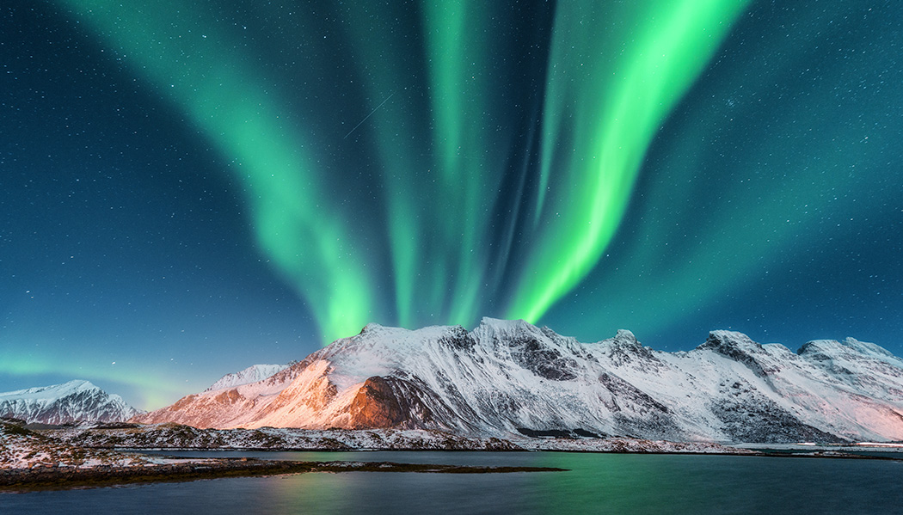
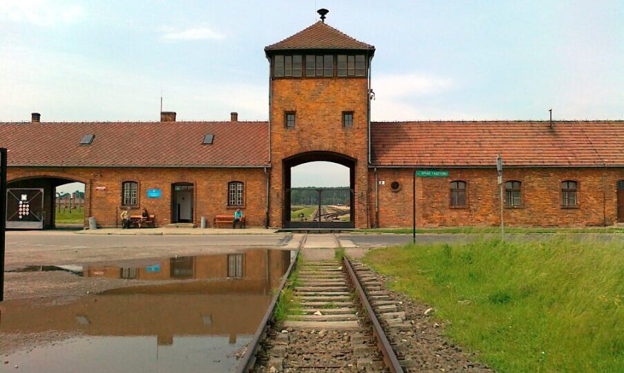
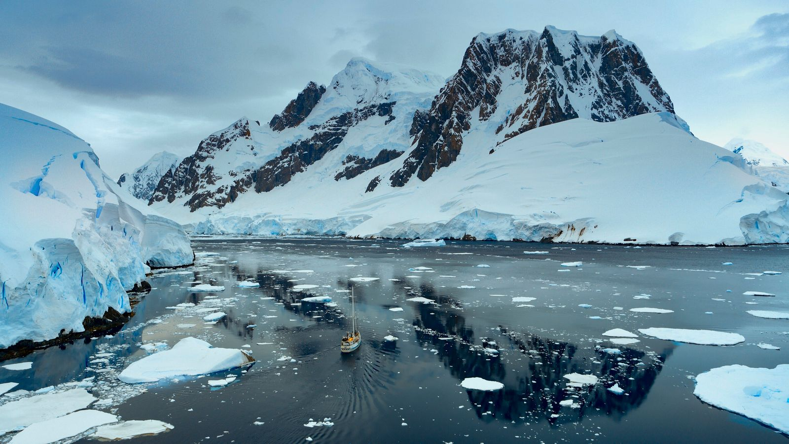

Sou uma pessoa sociável, gosto muito de fórmula 1 e de sair com meus amigos.
Nome: Eduardo Farias Domingues
Turma: 2ºI
Lugares que tenho vontade de conhecer




Minha vontade de visitar esses lugares vem majoritariamente quanto a periodos históricos e desejos individuais meus, como conhecer locais afetados por guerras, ver as geleiras antes de sumires, e eventos raros do planeta.
O lugar dos meus sonhos
Nome do lugar: Antártida
Por que quero conhecer esse lugar?
Um dos meus maiores desejos é ver as geleiras o mais rápido possivel, pois estãom derretendo com o aquecimento global. Também quero visitar esses lugares com condições anormais. Tenho grande desejo em conhecer fauna de lugares extremamente gelados. A paisagem de lá me impressiona muito.
Curiosidades sobre esse lugar
- Não existem ursos polares na antártida, como confundem muito.
- As geleiras estão derretendo e vegetação crescendo aos poucos, em breve a paisagem não existirá mais.
- Há uma unica vila chamada Las estrelas la.
Por que o salsicha?
- Me acham parecido com ele
- Ele é engraçado
- Tem medo de fantasmas (eu também)